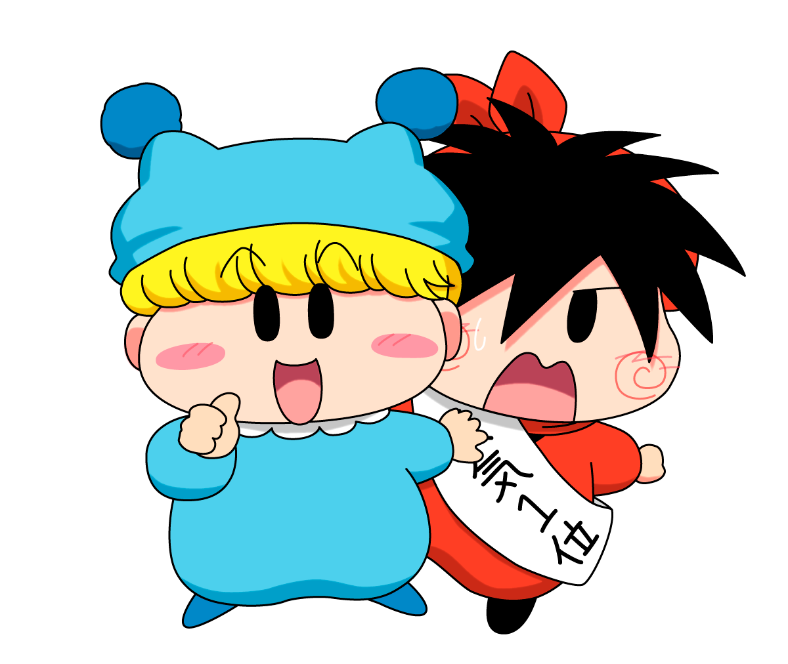

なんとなんと、公式のイラストコンテストが行われるようです！！
篠塚ひろむ先生の画業２５周年を記念して、「ミルモでポン！イラストコンテスト」が２０２４年１２月３日から１２月３１日までの期間で開催されるとのことです。
公式のイラストコンテストはミルモのコミックス１０巻発売以来なので、約２０年ぶりでしょーか。
詳細は、ムルモ屋本舗の掲示板にてん？さんからいただいた内容の通りです。
（わかりやすいのでそのまま引用させていただきました^^;）
ハローキティやマイメロディでおなじみのサンリオが運営していてファンと公式とがつながる創作プラットフォームである「Charaforio（キャラフォリオ）」というサイト上において行われ、13歳以上の方なら誰でも参加可能で、参加するともれなく全員にミルモのオリジナル待ち受け画像がもらえるほか、上位の大賞やミルモ賞・楓賞に選ばれると特別なプレゼントがもらえたりまたちゃおの公式ホームページ（ちゃおプラス）でイラストが紹介されたりします。
参加方法は、以下の４つのテーマ（いずれかでもOK）に沿ったイラストを描き、Charaforioのサイトから投稿する形となります。
- 『ミルモでポン！』の名場面イラスト
- 『ミルモでポン！』と私の思い出のイラスト
- 『ミルモでポン！』の推しキャライラスト
- 『ミルモでポン！』の好きなカップリングイラスト
イベントの詳細はcharaforioのページよりご確認お願いします。
参加特典は、イラスト投稿者全員にオリジナル待ち受け画像がプレゼントされるようです。
そして以下の特別賞も設けられているようです。
- 大賞（１名）
「ミルモでポン！×Cafe Lish」にて展示予定、篠塚先生からのお祝いコメント、ちゃおプラスにイラスト掲載 - ミルモ賞（５名）
篠塚先生のコメント入りミルモでポン！の生写真プレゼント、ちゃおプラスにイラスト掲載 - 楓賞（１０名）
ちゃおプラスにイラスト掲載
文字ばかりになってしまったので、最後にイベントを盛り上げるべく、イラストを描いて欲しがりそうな妖精２名のイラストを描いてみました(^◇^;)
今回のイベントで投稿されたイラストで、どのキャラが１番描かれるのかも気になりますね。

ヤシチ「女子に大人気の拙者のイラスト、期待しておるぞ・・」
ミルモ「地味なヤシチなんかより気品のあるオレを描いた方が特別賞に選ばれる可能性が上がるぜぃ」
ヤシチ「地味とはなんだーーっ！」
(2024/11/30)